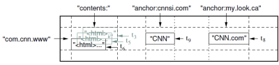

Is it Oracle or MySQL or something they have built themselves?
Answer
Bigtable
A Distributed Storage System for Structured Data
Bigtable is a distributed storage system (built by Google) for managing
structured data that is designed to scale to a very large size: petabytes of
data across thousands of commodity servers.
Many projects at Google store data in Bigtable, including web indexing,
Google Earth, and Google Finance. These applications place very different
demands on Bigtable, both in terms of data size (from URLs to web pages to
satellite imagery) and latency requirements (from backend bulk processing to
real-time data serving).
Despite these varied demands, Bigtable has successfully provided a flexible,
high-performance solution for all of these Google products.
Some features
- fast and extremely large-scale DBMS
- a sparse, distributed multi-dimensional sorted map, sharing characteristics of both row-oriented and column-oriented databases.
- designed to scale into the petabyte range
- it works across hundreds or thousands of machines
- it is easy to add more machines to the system and automatically start taking advantage of those resources without any reconfiguration
- each table has multiple dimensions (one of which is a field for time, allowing versioning)
- tables are optimized for GFS (Google File System) by being split into multiple tablets - segments of the table as split along a row chosen such that the tablet will be ~200 megabytes in size.
Architecture
BigTable is not a relational database. It does not support joins nor does it
support rich SQL-like queries. Each table is a multidimensional sparse map.
Tables consist of rows and columns, and each cell has a time stamp. There can
be multiple versions of a cell with different time stamps. The time stamp
allows for operations such as "select 'n' versions of this Web page" or
"delete cells that are older than a specific date/time."
In order to manage the huge tables, Bigtable splits tables at row boundaries
and saves them as tablets. A tablet is around 200 MB, and each machine saves
about 100 tablets. This setup allows tablets from a single table to be spread
among many servers. It also allows for fine-grained load balancing. If one
table is receiving many queries, it can shed other tablets or move the busy
table to another machine that is not so busy. Also, if a machine goes down, a
tablet may be spread across many other servers so that the performance impact
on any given machine is minimal.
Tables are stored as immutable SSTables and a tail of logs (one log per
machine). When a machine runs out of system memory, it compresses some tablets
using Google proprietary compression techniques (BMDiff and Zippy). Minor
compactions involve only a few tablets, while major compactions involve the
whole table system and recover hard-disk space.
The locations of Bigtable tablets are stored in cells. The lookup of any
particular tablet is handled by a three-tiered system. The clients get a point
to a META0 table, of which there is only one. The META0 table keeps track of
many META1 tablets that contain the locations of the tablets being looked up.
Both META0 and META1 make heavy use of pre-fetching and caching to minimize
bottlenecks in the system.
Implementation
BigTable is built on Google File System (GFS), which is used as a backing
store for log and data files. GFS provides reliable storage for SSTables, a
Google-proprietary file format used to persist table data.
Another service that BigTable makes heavy use of is Chubby , a highly-
available, reliable distributed lock service. Chubby allows clients to take a
lock, possibly associating it with some metadata, which it can renew by
sending keep alive messages back to Chubby. The locks are stored in a
filesystem-like hierarchical naming structure.
There are three primary server types of interest in the Bigtable system:
- Master servers: assign tablets to tablet servers, keeps track of where tablets are located and redistributes tasks as needed.
- Tablet servers: handle read/write requests for tablets and split tablets when they exceed size limits (usually 100MB - 200MB). If a tablet server fails, then a 100 tablet servers each pickup 1 new tablet and the system recovers.
- Lock servers: instances of the Chubby distributed lock service. Lots of actions within BigTable require acquisition of locks including opening tablets for writing, ensuring that there is no more than one active Master at a time, and access control checking.
Example from Google's research paper:

A slice of an example table that stores Web pages. The row name is a
reversed URL. The contents column family contains the page contents
, and the anchor column family contains the text of any anchors that
reference the page. CNN's home page is referenced by both the Sports
Illustrated and the MY-look home pages, so the row contains columns named
anchor:cnnsi.com and anchor:my.look.ca. Each anchor cell has one
version ; the contents column has three versions , at timestamps t3,
t5, and t6.
API
Typical operations to BigTable are creation and deletion of tables and column
families, writing data and deleting columns from a row. BigTable provides this
functions to application developers in an API. Transactions are supported at
the row level, but not across several row keys.
Here is the link to the PDF of the research paper.
And here you can find a video showing Google's Jeff Dean in a lecture at the
University of Washington, discussing the Bigtable content storage system used
in Google's backend.
Suggest